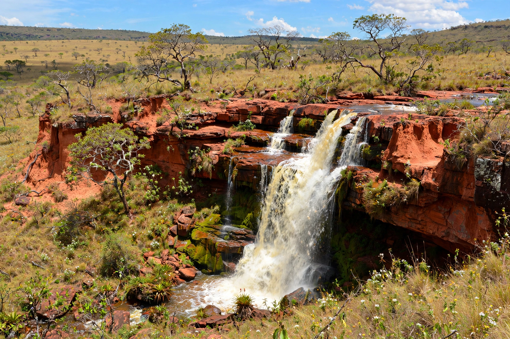

Goiás
| Goiás | |
 | |
| Country | Brazil |
|---|---|
| Capital & largest city | Goiânia |
| Area | c. 340,243 km² |
| Population | c. 7.06 million (2022 census) |
| Abbreviation | GO |
Goiás is a state in Brazil's Central-West Region, bordered by Tocantins, Bahia, Minas Gerais, Mato Grosso, and Mato Grosso do Sul, and surrounding the Federal District of Brasília on three sides. Its capital is Goiânia.
History
The state takes its name from the Goyaz indigenous people. Portuguese bandeirantes found gold in the 1720s, founding the old capital Vila Boa (today the UNESCO-listed town of Goiás Velho). The planned city of Goiânia replaced it as capital in the 1930s–40s as part of Brazil's "March to the West". In 1988 the northern half of the state was separated to form the new state of Tocantins.
Geography and economy
Goiás is dominated by Cerrado savanna on a high plateau, drained by the Araguaia, Tocantins, and Paranaíba rivers. It is a major producer of grains, sugarcane, and cattle, and of minerals including nickel, gold, and niobium. Tourist draws include the hot springs of Caldas Novas and Rio Quente, the Chapada dos Veadeiros National Park, and the historic towns of Goiás Velho and Pirenópolis. The city of Goiânia was the site of the 1987 Goiânia accident, one of the world's worst radiological accidents.
See also
Goiânia accident · Tocantins · Mato Grosso · List of state capitals in Brazil
Recreated from memory as a standalone page.